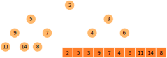

CS3460: Data Structures
Priority Queues
CS3460: Data Structures & Algorithms
Priority Queues
Review
Abstract Data Types
Sequences
Stacks & Queues
Sets & Dictionaries
Maps
Priority Queues
Implementations (Concrete)
Arrays
Linked Lists
Hash Tables
Binary Search Trees
Binary Heap
Priority Queues
In a simple
queue
, the order of elements is maintained (FIFO)
In a
priority queue
, the element with highest priority (usually defined as having the
lowest
key) is the first to be removed
Many use cases:
Scheduling
— Manage a set of tasks, where you always perform the highest-priority or highest-urgency task next.
Sorting
— Insert $n$ elements into a priority queue and they can be removed in sorted order.
More sophisticated
algorithms
, such as Dijkstra's shortest path algorithm, use priority queues.
Priority Queue Operations
All priority queues support:
insert(e, k)
: insert a new element $e$ with key $k$
remove-min
: remove and return the element with the minimum key
In practice (thanks to Dijkstra's algorithm), many support:
decrease-key(e, Δk)
: given a pointer to element $e$, reduce $e$'s key by $\Delta k$
Some priority queues also support:
increase-key(e, Δk)
: increase $e$'s key by $\Delta k$
delete(e)
: remove $e$ from the priority queue
find-min
: return a pointer to the element with the minimum key
Redundancy Among Operations
How can we implement
increase-key
and
decrease-key
?
delete
the node and re-
insert
with a new key
How can we implement
delete
?
decrease-key
to $-\infty$, then
remove-min
How can we implement
remove-min
?
find-min
, then
delete
the found node
How can we implement
find-min
?
remove-min
to find the minimum, then re-
insert
the node
Priority Queue Implementations
There are a variety of simple ways to implement the
priority queue
abstract data type as a
concrete data structure
:
insert(e, k)
remove-min
unsorted array or linked list
$O(1)$
$O(n)$
sorted array or linked list
$O(n)$
$O(1)$
balanced binary search tree
$O(\lg n)$
$O(\lg n)$
binary heap
$O(\lg n)$
$O(\lg n)$
The Binary Heap
A
binary heap
is an almost-complete binary tree that satisfies the
heap property
: for each element $e$, key(parent(e)) ≤ key(e)
This means that the minimum element always resides at the root
All levels full except the last, which is filled from left to right
That means we don't need a typical
node-based
structure!
The Binary Heap
Instead, we can store elements in an array $A[0 \dots n-1]$
Surprisingly easy to move around this array in a tree-like fashion!
parent(i)
= $\lfloor (i-1)/2 \rfloor$
left-child(i)
= $2i + 1$ ;
right-child(i)
= $2i + 2$

Heap Operations
All binary heap operations are built from two fundamental operations
sift-up(i)
(or
up-heap
): repeatedly swap element $A[i]$ with its parent as long as $A[i]$ violates the heap property with respect to its parent
sift-down(i)
(or
heapify
): as long as $A[i]$ violates the heap property with one of its children, swap $A[i]$ with its smallest child
Both run in $O(\lg n)$ since the height of an $n$-element heap is $O(\lg n)$
Heap Operations
Now the remaining operations are easy to define in terms of
sift-up
and
sift-down
insert
:
place new element at $A[n+1]$, then
sift-up(n+1)
remove-min
:
swap $A[n]$ and $A[1]$, then
sift-down(1)
decrease-key(i, Δk)
:
decrease $A[i]$ by $\Delta k$, then
sift-up(i)
increase-key(i, Δk)
:
increase $A[i]$ by $\Delta k$, then
sift-down(i)
delete(i)
:
swap $A[i]$ with $A[n]$, remove,
sift-up(i)
,
sift-down(i)
All of these clearly run in $O(\lg n)$ time
More generally
: modify the heap, then fix any violation of the heap property with one or two calls to
sift-up
or
sift-down